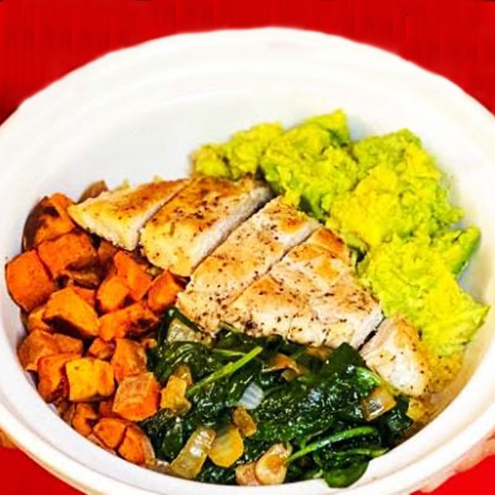

Chicken Quinoa Bowl dengan tumis ayam dan sayuran
Bahan:
- 100 gram quinoa
- 100 gram dada ayam tanpa kulit, potong dadu
- 1 sdm minyak zaitun
- 1/2 buah paprika merah, potong dadu
- 1/2 buah zucchini, potong dadu
- 50 gram brokoli, potong kecil-kecil
- 1 siung bawang putih, cincang halus
- 1/4 sdt garam
- Merica secukupnya
- Perasan lemon secukupnya
- Daun basil atau peterseli untuk hiasan (opsional)
Cara Membuat:
- Rebus Quinoa : Masak quinoa dalam air mendidih hingga empuk (sekitar 15 menit). Tiriskan dan sisihkan.
- Tumis Ayam : Panaskan minyak zaitun di wajan, lalu tambahkan bawang putih. Tumis hingga harum. Masukkan potongan ayam, masak hingga matang dan kecoklatan. Tambahkan garam dan merica sesuai selera.
- Masak Sayuran : Masukkan paprika, zucchini, dan brokoli ke dalam wajan. Tumis selama 3-5 menit hingga sayuran layu namun tetap renyah.
- Campur Semua Bahan : Tambahkan quinoa yang sudah matang ke dalam wajan, lalu aduk rata dengan ayam dan sayuran.
- Sajikan : Angkat dari wajan, letakkan di piring, beri perasan lemon dan hias dengan daun basil atau peterseli jika suka.